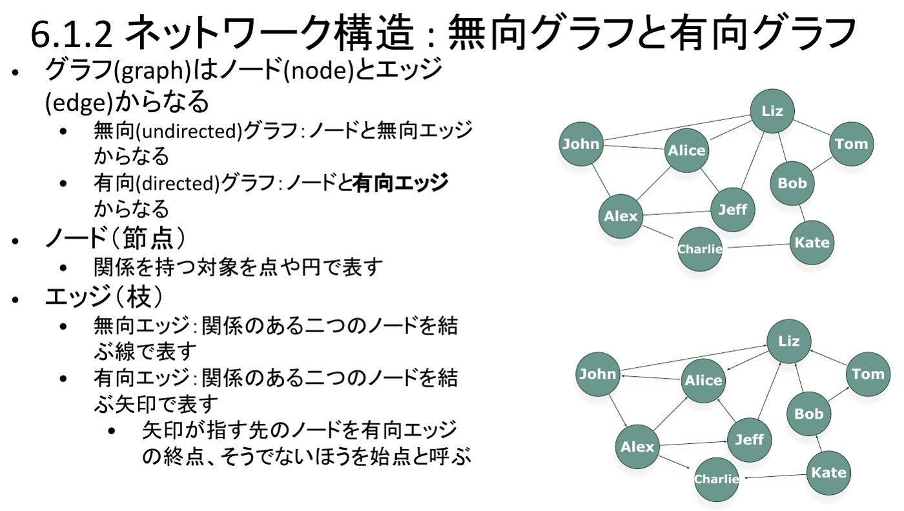
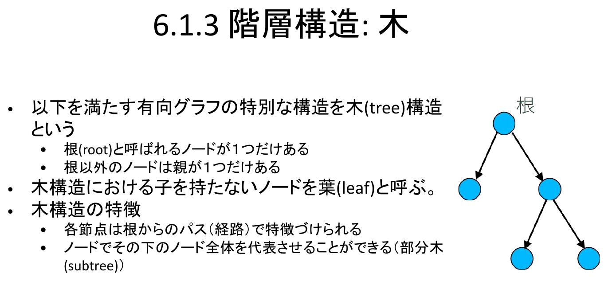
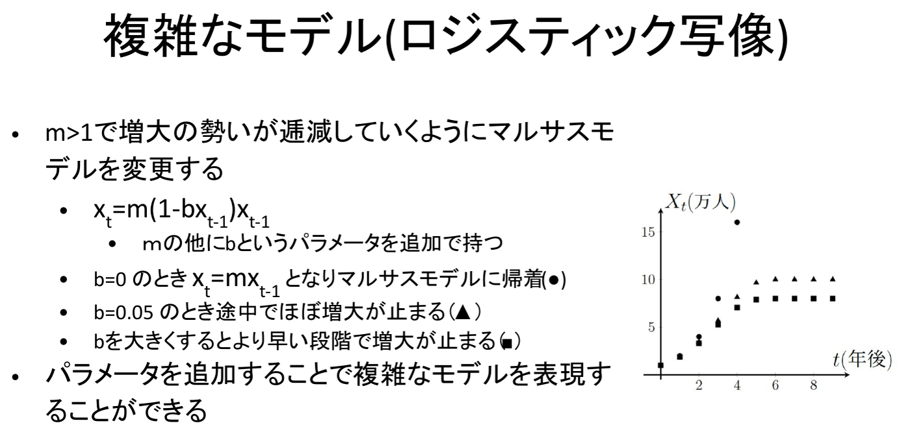

情報｜田中哲郎クラス講義ノート
このページは講義スライドの流れを節単位に組み直し、用語の関係と学習上の要点を説明する。行列・グラフ・木・シミュレーションを中心に、定義だけでなく、なぜ必要か、どのように使うかまで確認する。
アンケートの回答一覧、生徒ごとの成績表、商品ごとの売上記録——これらは分野が違っても、共通の構造を持つ。「対象ごとに、決まった種類の数値がいくつか並ぶ」という構造である。これを計算機で扱いやすい形にしたものが行列（matrix）である。
n件のデータをまとめて扱うときは、行列全体を1つの変数（たとえばX）で表す。第五章で扱った配列の考え方をそのまま2段重ねにすればよく、i行目・d次元データのj番目の値を(i,j)要素と呼ぶ。添字は0から始まる（0-indexed）ことに注意する。
4件のデータ、各データが4個の数値からなる4×4行列Xがあり、0行目が X[0] = [0, 150, 145, 233] であるとする。行列の(0,0)要素と(0,3)要素は、それぞれどう書けるか。
(0,0)要素は0行目の0番目の値なので X[0][0]（値は0）。(0,3)要素は0行目の3番目の値なので X[0][3]（値は233）。「行列の(i,j)要素」は「配列の配列」の外側の添字iで行を選び、内側の添字jで列を選ぶという、2段階の添字アクセスに対応することを確認する。
行列によるデータ表現は、次に扱うグラフの隣接行列にもそのまま応用される、この章全体を支える最も基本的な道具である。
路線図、友人関係、組織の指揮系統——これらはいずれも「対象」と「対象どうしの関係」からなる。この構造を抽象化したものがグラフ（graph）である。
グラフはノード（node、節点）とエッジ（edge、枝）からなる。ノードは関係を持つ対象を点で表し、エッジはノード間の関係を線で表す。エッジに向きを付けない場合を無向（undirected）グラフ、向きを付ける場合を有向（directed）グラフという。有向エッジでは、矢印が指す先を終点、そうでない側を始点と呼ぶ。

有向グラフでは、エッジの向きに応じて次の関係を定義できる。
木構造（次節）は、DAGにさらに強い制約を課した特別な場合として位置づけられる。
グラフも前節の行列表現にそのまま乗せられる。ノードにあらかじめ番号を振っておき、ノードiからノードjへ有向エッジがある場合は(i,j)要素を1、それ以外を0とする2次元配列を作れば、グラフの構造をまるごと行列で表現できる。この行列を隣接行列（adjacency matrix）という。「グラフを絵として描く」ことと「グラフを行列として計算機に持たせる」ことが、同じ情報の2通りの表現であることを押さえておく。
グラフによるモデル化は、具体的な題材へ次のように対応する。
(a|b)*c（aまたはbが何回か続いた後にcが入力された直後だけ終了状態となる）のような正規表現で書かれた条件も、この仕組みで判定できる。次を満たす有向グラフを木（tree）構造という。
子を持たないノードを葉（leaf）と呼ぶ。
木は「根以外は親が1つだけ」という強い制約を持つ点で、一般の有向グラフ（DAG）よりもさらに特殊な構造である。この制約のおかげで、次の2つの便利な性質が成り立つ。

ノードを地区、有向エッジを「ある地区が別の地区に含まれる」関係とすると、住所は木構造をなす。日本には「駒場」という地名が4つ以上ある（東京都目黒区駒場、埼玉県さいたま市浦和区駒場、長野県下伊那郡阿智村駒場、北海道網走市駒場、……）が、都道府県から書き始めたパス名によって一意に区別できる。これは「各節点が根からのパスで特徴づけられる」という木構造の性質そのものである。
ノードをファイル・ディレクトリ（フォルダ）、有向エッジを「あるディレクトリが、あるファイル・ディレクトリを含む」関係とすると、ファイルシステムも木構造をなす。フォルダを開いてさらに中のフォルダを開くという操作は、根からのパスをたどる操作にほかならない。
2022年度共通問題 大問2では、DNSのドメイン名を題材に階層モデル（木構造）と一般のネットワークモデル（グラフ）の使い分けが問われ、2025年度共通問題 大問2では、生物の親子関係を有向グラフで表し、祖父母・きょうだい・親等を求めるアルゴリズムが出題された。木構造・グラフは「知っていれば解ける」というより、与えられた関係をどちらのモデルで捉えるべきかを見抜くことが問われている。
行列・グラフ・木は、既に存在する（観測された）データを計算機上でどう「持たせるか」という表現の話だった。ここからは視点を変え、現象そのものを模した仕組み（モデル）を計算機上に作り、そこから疑似的にデータを生成するという使い方を扱う。これをシミュレーションという。
現実の現象をよく見て、その振る舞いを再現する数理的な仕組みを作ることをモデル化という。できあがったモデルに計算機上で入力を与えて動かし、（疑似）データを生成する手続きをシミュレーションという。モデルは現象を完全に再現する必要はなく、目的に必要な性質だけを抽出したものでよい。
モデルは大きく2種類に分かれる。同じ入力に対して常に同じ結果を返す決定的なモデルと、乱数を用いて実行のたびに結果が変わりうる確率的なモデルである。次の2節で、それぞれの代表例を見る。
各年の人口が、前年の人口に比例して変化するという最も単純な人口モデルを、マルサスモデルという。
$m$はパラメータと呼ばれ、この値によって生成されるデータの振る舞いは大きく変わる。$m\gt1$なら増大、$m=1$なら一定、$m\lt1$なら減少する。初期値$x_0$とデータのサイズ（何年分生成するか）を与えれば、このモデルからデータ列を生成できる。計算機上では、サイズ$T$・パラメータ$m$・初期値$x_0$を入力とし、$x_1,x_2,\ldots,x_T$を要素に持つ配列を出力する関数として、このモデルを実装できる。
マルサスモデルは「1個の変数が、別の1個の変数に比例する」という線形モデルの特別な場合である。線形モデルはパラメータの個数に応じて次のように一般化できる。
マルサスモデルは$m>1$なら際限なく増大し続けてしまい、資源制約のある現実の人口動態を表すには単純すぎる。そこで「増える勢いが次第に鈍っていく」性質を、パラメータを1つ追加して表現したのがロジスティック写像である。
$m$のほかに$b$というパラメータを追加で持つ。$b=0$のときは$x_t=m\,x_{t-1}$となり、マルサスモデルに一致する。$b=0.05$にすると、増大の途中でほぼ増加が止まる。$b$をさらに大きくすると、より早い段階で増大が止まる。
ロジスティック写像は、マルサスモデルよりも複雑なモデルである——というのは、マルサスモデルのパラメータをどのように定めても、ロジスティック写像で単に$b=0$とすれば同じデータ生成を再現できるからである（モデルの集合が包含関係にある）。一般に、複雑なモデルほどより正確なシミュレーションが可能で、適用できる現象の範囲も広いが、その分パラメータを適切に決定するのは難しくなる。パラメータを1つ追加するだけで表現力が上がる代わりに、決めるべきものも増える、という設計上のトレードオフを押さえておく。

$m=1.5$、$b=0.05$、$x_0=10$としてロジスティック写像 $x_t=m(1-bx_{t-1})x_{t-1}$ を計算し、$x_1$、$x_2$を求めよ。
$x_1=1.5\times(1-0.05\times10)\times10=1.5\times0.5\times10=7.5$。
$x_2=1.5\times(1-0.05\times7.5)\times7.5=1.5\times0.625\times7.5\approx7.03$。
マルサスモデル（$b=0$）ならこの同じ$m,x_0$で$x_1=15$、$x_2=22.5$と増え続けるのに対し、$b>0$を入れると増加の勢いがわずか2ステップで鈍り始めることが確認できる。
確率変数が0か1のいずれかをとるとき、その分布をベルヌーイ分布という。（非負の）パラメータ$\theta$によって、次のようにサンプリングされる確率が決まる。
計算機上では、パラメータ$\theta$を持つベルヌーイ分布からサンプリングする関数があらかじめ用意されているものとして利用する。現代の計算機の多くは、実際には疑似乱数列を用いてこれをシミュレートしている。サンプリングによって得られた個々のデータをサンプルあるいは標本値と呼び、同じ関数を呼び出しても、呼び出すごとに結果は変わりうる。
$d$個の（非負の）パラメータ$\theta_1,\theta_2,\ldots,\theta_d$を持ち、それぞれ$1,\ldots,d$のいずれかがサンプリングされる確率を表す分布をカテゴリカル分布という。ベルヌーイ分布は$d=2$の特別な場合にあたる。
$d=3$のカテゴリカル分布からサンプリングする関数を使えば、じゃんけんをシミュレートできる。$\theta_1,\theta_2,\theta_3$を、それぞれグー・チョキ・パーを出す確率とすればよい。この考え方は、本章より前の章で扱われた「定常無記憶情報源」（各記号が互いに独立に、決まった確率分布に従って生成されるという情報源のモデル）のシミュレーションにも応用できる、とスライドは述べている。
ベルヌーイ分布は、二択の結果を繰り返し積み重ねる場面のモデル化にも使える。
賭けを$T$回行い、確率$\theta$で収支が1増え、確率$1-\theta$で収支が1減るとする。この収支の時間変動をランダムウォークという。
所持金10から出発し、賭けを繰り返して所持金が0になる（破産する）かどうかをシミュレーションできる。$\theta=0.5$なら勝ち負けは五分五分だが、それでも有限回の試行では偶然に負けが込んで破産に至ることがある——「平均的には五分五分」であることと「実際の1回の試行がどう転ぶか」は別問題であることを、乱数を使ったシミュレーションは具体的に確認させてくれる。
ある数理モデルが正しいと分かっているときに、そのモデルから得られるデータが、求めたい結果そのものになるような問題を順問題という。
「$i$番目の科目の対策を行うには時間$t_i$が必要であり、得点が$v_i$増加する」というモデルを考える。1番目・2番目・3番目の科目の対策を行うとき、どれくらい時間がかかるか、得点がどれくらい増加するかを求める問題は順問題である——モデル（各科目の$t_i,v_i$）が既知で、そこから結果（合計時間・合計得点）を計算するだけだからである。
現実からの要請や観測データを利用して、数理モデルの入力やパラメータなどを決定する問題を逆問題という。
先ほどと同じ試験対策モデルで、「25点以上得点を増加させるには、どの科目の組み合わせで対策すればよいか」「15時間以内の対策で得点増加を最大化するには、どの科目を対策すべきか」という問いは逆問題である——欲しい結果（得点条件・時間制約）から、逆に入力（対策する科目の組み合わせ）を決めなければならない。この種の「限られた資源（時間）の中で価値（得点）を最大化する組み合わせを選ぶ」問題はナップサック問題と呼ばれる、計算機科学で古くから研究されている代表的な問題である。
逆問題は、しばしば最適化問題として定式化できる。最適化問題は、次の2つの要素で構成される。
「15時間以内の対策で得点増加を最大化する」という先ほどの逆問題を、$i$番目の科目を対策するかどうかを表す変数$x_i\in\{0,1\}$（対策するなら1、しないなら0）を使って、目的関数と制約条件の形に定式化せよ。
目的関数：$\sum_i v_i x_i$ を最大化する。制約条件：$\sum_i t_i x_i \le 15$（不等式制約）、および$x_i\in\{0,1\}$（各科目を対策するかしないかの二択であるという、離散的な集合への制約）。このように書き下すと、ナップサック問題が「目的関数を最大化しつつ不等式制約を満たす、離散的な変数の組み合わせを選ぶ最適化問題」の一種であることが確認できる。
用語を単独で暗記するのでなく、題材のどこにその概念が現れ、どの条件を根拠に判断するかを説明できるようにする。
行列・グラフ・木・シミュレーションは独立した暗記事項ではなく、情報を表現し、処理し、伝え、社会で安全に利用するための一連の考え方としてつながっている。各節の太字語を自分の言葉で説明できるか確認しよう。